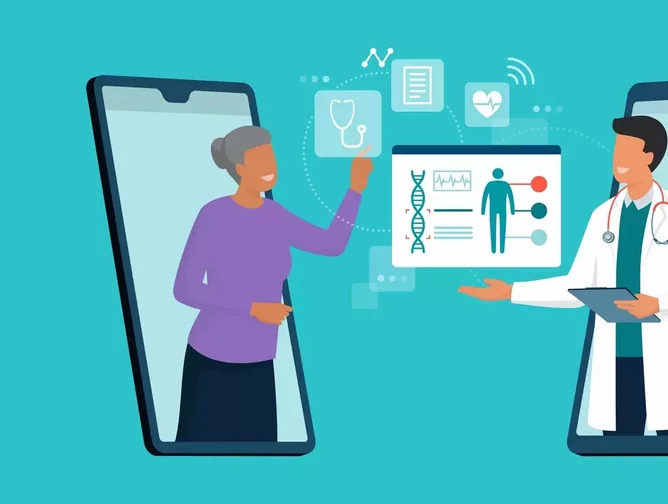

There has been a significant shift in patient attitude towards health care services. While online medical services don’t have a major impact on patient care outcomes, they do accommodate the growing interest in repeated communication with care providers leading to a more personal experience.
With the widespread COVID-19 pandemic, the need for online medical services became painfully apparent. But, how does this shift affect those without or insufficient access to the internet? Who benefits the most from these resources?
“Healthcare is an area that has the greatest potential to benefit from technology.” - Tamilisai Soundararajan
The New First Line
Telehealth, as it is called, encompasses online portals and video and audio communications used to enable communication between the patient and doctor.
Telehealth has been shown to be effective in these areas as it allows for a better way for doctors to monitor their patients’ conditions while also providing a fast way to provide emergency care, such as in the case of a stroke. Furthermore, telehealth provides a lower cost alternative for hospitals and clinics to provide care.
Online portals have become crucial for patients to access medical records or schedule an appointment. Solv is a company that partners with hospitals and clinics to provide these resources and services to patients. Before March 2020 Solv only had 9500 telemedicine bookings, however, ever since 1.5M bookings have been scheduled.
The United States healthcare system is unique for developed countries, as it is the only one with a privatized system. This has led to many questionable practices raising the concern of how telehealth affects existing health disparities already present, and additional innovation and resources being dedicated to those who already have more.
“It’s so important for those living with chronic pain to establish good communication with both their healthcare professionals and caregivers. Clear communication about pain is vital to receiving proper diagnosis and effective treatment.” - Naomi Judd
The Era of Connectivity
The biggest barriers to telemedicine are digital technology, literacy, and coverage. Unfortunately, these barriers affect those who have historically been underrepresented in medicine.
Roughly 20 million Americans lack access to internet and even more don’t have access to high enough speeds to complete a virtual health visit, i.e., over video services. This encompasses a wide variety of people and demographics, but the majority of those tend to be black, Hispanic, elderly, disabled, or located rurally.
These trends continue to be present amongst other underrepresented communities. In fact, one in five seniors don’t have access to internet at home. Furthermore, two-thirds of those without internet access are people on Medicaid and Medicare.
COVID-19 has been a major change in people’s life and telemedicine provides a safe way to get healthcare for both the patient and doctor. Black and Hispanic populations have been documented to have worse healthcare outcomes from COVID-19 and are more likely to get this infection than White individuals. This is coupled with Black and Hispanic populations being less likely to own a computer and have broadband internet, both being crucial barriers in telemedicine.
 To go places and do things that have never been done before – that’s what living is all about.Looking Forward
When speaking with a nurse practitioner, in her experience, virtual visits have been extremely beneficial towards patients after their initial physical visit. After COVID-19 started, insurance agencies began covering virtual visits unlike before. This has made the monitoring of patient conditions much easier for her job. Her hope is that as we begin to exit the pandemic, insurance agencies will still cover virtual visits. The only difficult part is when discussing end-of-life care with a patient as it is much more difficult to read patient body language.
This isn’t to say that telehealth and other resources aren’t important; every tool has its upside and downside. It is just crucial that these resources get allocated properly so that everyone has access to better care. Telehealth/telemedicine’s effects on patient outcomes are still being documented. However, what is clear is that those who utilize these resources have a better perception and understanding of care and the safety precautions behind them have been necessary in these times.
Images by Digital Healthcare and Medical Economics